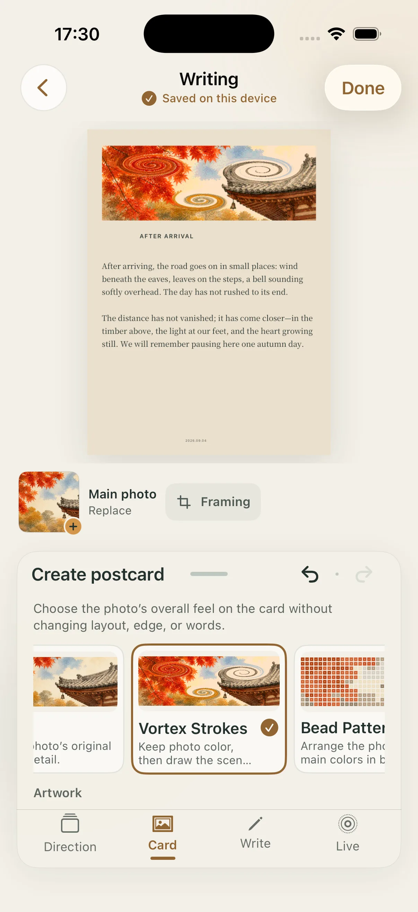
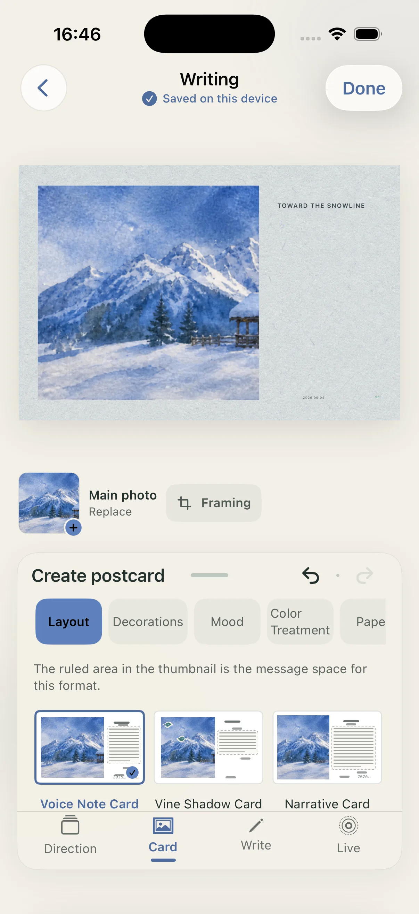
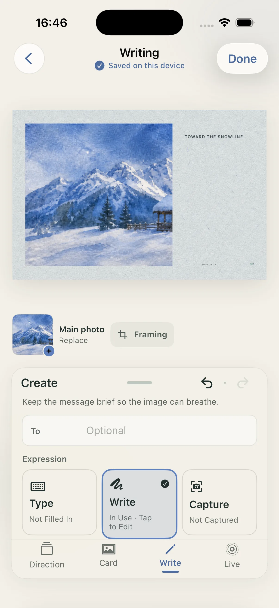
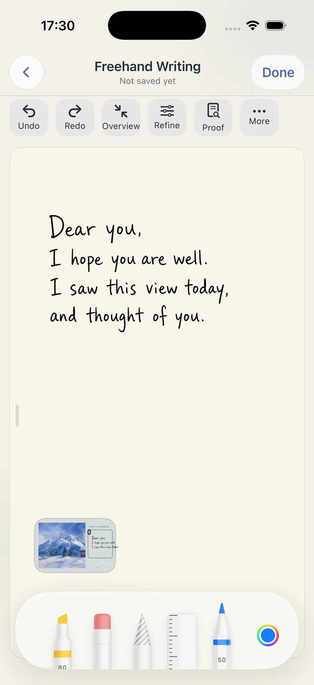
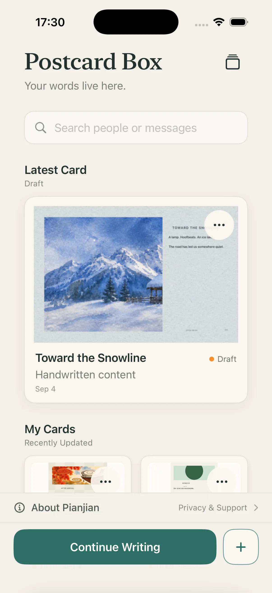
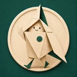
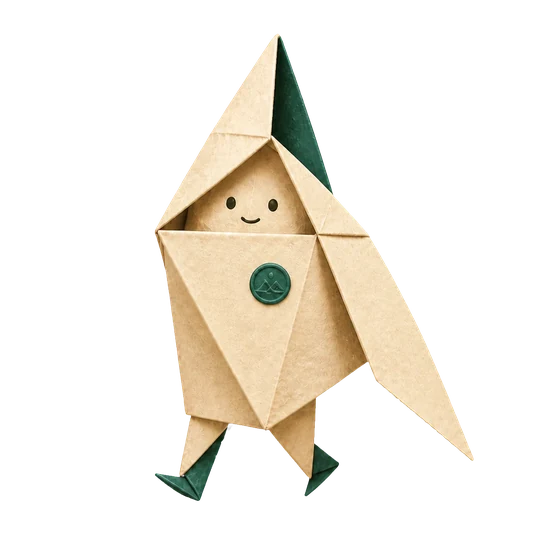

Photos and drafts
You choose the photo. Editing, handwriting, messages, and drafts are handled on your device by default. Saving to Photos and system sharing always start with you.
PHOTO · PAPER · YOUR OWN WORDS
Choose a photo and leave a few honest words. Postcard turns it into a digital postcard you can save, share, and revisit.

SEE THE CARD BEFORE YOU MAKE IT
Image, paper, handwriting, and empty space all work toward one thing: a card that feels like it belongs to the person you want to write to.
THE CARD COMES FIRST
Postcard starts with the result. See the page you want to make, then take your time finishing it.

FROM A MEMORY TO A FINISHED CARD
Start with a photo or Live Photo you choose.
Find its shape through layout, image treatment, paper, and edge.
Type, handwrite, or bring in a note already written on paper.
After a final check, you decide how to deliver this digital postcard.


A HANDWRITTEN LINE STAYS YOURS
Each stroke stays on the card. You can also bring in a note written on paper and carry those words forward.


COLLECTIONS
Browse finished postcards and find a beginning for this moment. They are complete works you can continue, not a list of settings or source images.
YOUR CONTENT GOES WHERE YOU DECIDE
You choose the photo. Editing, handwriting, messages, and drafts are handled on your device by default. Saving to Photos and system sharing always start with you.
Only after you confirm is a processed copy of the current main image used for that one AI generation. It is an optional online feature, not a requirement for ordinary creation.

LEAVE A PAGE FOR SOMEONE IMPORTANT
Postcard is made for iPhone and iPad. See how to make your first card, then begin with one photo.
